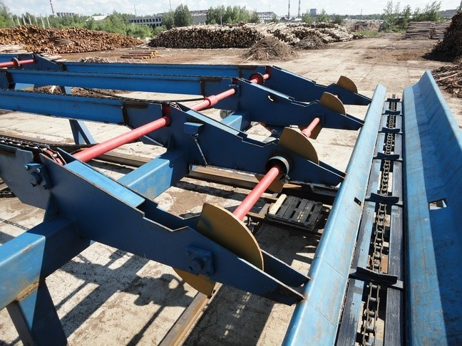
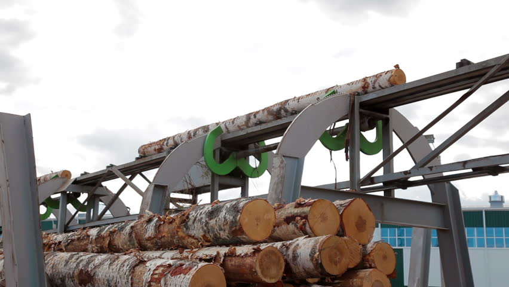

ИТ сортировки бревен
Эти технологии позволяют сэкономить 2...3 %, а за счет точности приемки до 5 % и более пиловочного сырья. Это достигается сортировкой бревен с точностью 1...2 мм с учетом их кривизны, сбега и других особенностей формы с помощью бесконтактных систем сбора информации о каждом бревне и обработки этой информации по специализированной программе на ЭВМ. В результате имитации на «тренажере» раскроя каждого бревна по ряду используемых на предприятии поставов выбирается тот, который дает максимальный объемный выход пиломатериалов. Этот постав и определяет рациональную сортировочную группу для данного бревна.
Линия сортировки бревен
Конструктивно линия сортировки бревен представляет собой цепной транспортер c зубьями, оснащенный измерительной станцией двух- или трехмерного сканирования и рядом карманов, в каждый из которых с помощью специальных приводов сбрасываются бревна с определенными характеристиками. Помимо простейшей функции – сортировки бревен – линия может быть приспособлена также к дополнительным задачам по предварительной обработке сырья путем установки различного оборудования. Как правило, эти опции относятся к дополнительным и не входят в базовый вариант поставки типовой автоматизированной сортировочной линии. Наиболее востребованные части линии: окариватель, маятниковая пила и металлоискатель. Окариватель. Предварительная очистка бревен от коры позволяет сделать еще один шаг к улучшению качества продукции, а также сэкономить на режущем инструменте. Маятниковая пила полезна, когда вы имеете дело c бревнами длиной в десятки метров. Существует технология, когда пила заранее отделяет сырье для производства фанеры и ДСП. Металлоискатель. Линия может не только отправлять бревна, включающие металл, в карман, предназначенный специально для них, но и помечать места, где засели невидимые глазу осколки, краской.  3 страница 5 странца